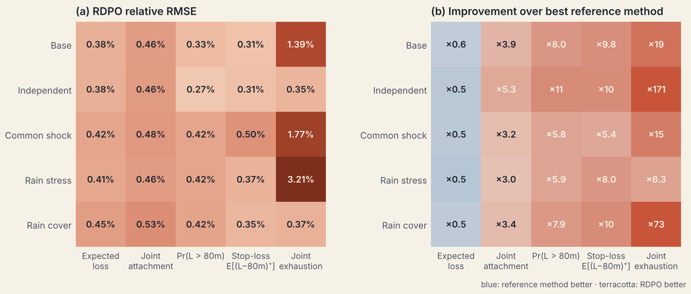
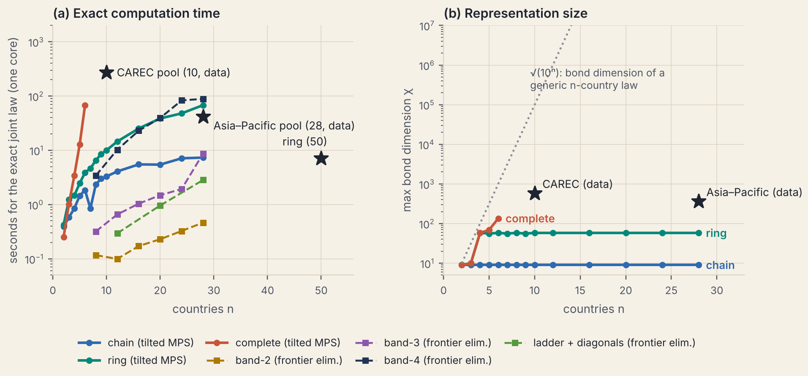
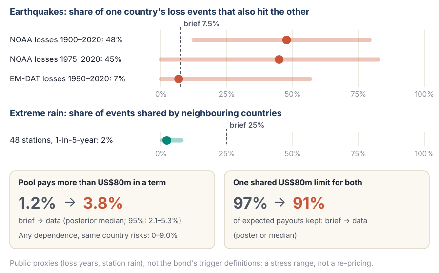
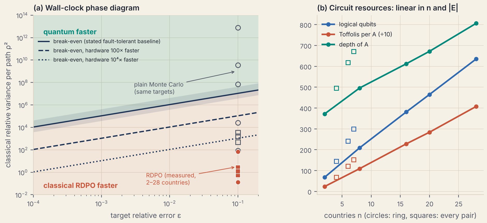

November 2026
Exact and Learned Joint-Tail Estimation for Pooled Disaster Risk Financing How often several countries’ disaster covers pay out together: computed with zero sampling error where possible, estimated with a learned sampler where not, and costed on quantum hardware.
ADB’s US$160m Disaster Relief Bond pays the Kyrgyz Republic and Tajikistan separately; whether such cover can be pooled, and how much shared capital a pool needs, depends on how often several countries need a payout in the same three-year term. We compute these joint probabilities exactly, with no sampling error, for pools of up to 28 countries, and estimate the cases exact methods cannot reach with a learned sampler that is more accurate per simulated scenario than the challenge’s reference methods. We then cost the quantum version of the same calculation end to end and state the hardware it would need to pay.
Exact where possible, learned where not, quantum where it can be shown to pay.
For ADB the larger uncertainty is dependence itself: under any dependence consistent with the two countries’ own risks, the chance that the pool pays more than US$80m in a term ranges from 0 to 9.0% (brief 1.20%). Public data give a stress range centred at 3.12 times the brief’s value (§3.5).
What we claim
What we do not claim
Term: the bond’s three-year cover period. Joint tail: outcomes in which several countries pay together; joint exhaustion: both countries pay their full US$80m in the same term (μ = 3.2×10⁻⁵ on the benchmark). Exceedance: the pool’s total payout L exceeds a threshold T, Pr(L > T). Stop-loss: the expected payout above T, E[(L − T)⁺]. Path or query: one simulated three-year scenario (classical), or one run of the quantum state-preparation circuit. μ: the exact value of a target. Relative RMSE: root-mean-square error divided by μ, over independent repetitions. Treewidth: how tangled the dependence graph is; exact cost grows exponentially in it, not in the number of countries n.
The model. Each country holds US$80m of cover over a three-year term: US$70m against earthquakes, paid in quarter steps, and US$10m against extreme rain, paid once. Earthquakes and rain arrive as Poisson processes; some events hit both countries. The brief’s five targets (expected loss, both pay, exceedance of US$80m, stop-loss above US$80m, joint exhaustion) are expectations μ = E[f(L₁, L₂)] of the two term losses, under five dependence scenarios: 25 cells.
The bottleneck is accuracy in the joint tail, and it grows with the portfolio. Joint exhaustion has μ = 3.2×10⁻⁵. Plain Monte Carlo with the benchmark’s 16,384 paths returns zero in 60% of runs. Exact enumeration is instant for two countries, but the annual state space is 10ⁿ for n countries, and regional pools cover 10–30 countries, where pool targets fall to 4.1×10⁻⁹–9.5×10⁻⁹ per term and, on a 28-country ring, to 1.3×10⁻¹³. Each new dependence scenario needs a fresh computation, so a method must be accurate at a fixed, modest budget.
State of the art. Catastrophe-model platforms aggregate event and year loss tables by plain Monte Carlo, with dependence through shared events or copulas (Joe 2014; Embrechts, Klüppelberg, and Mikosch 1997). Rare-event methods reduce variance but need a good proposal (Glasserman 2003; Owen 1997; Rubinstein and Kroese 2004; Cérou and Guyader 2007; Del Moral, Doucet, and Jasra 2006). Amplitude estimation offers a quadratic query speed-up for risk measures (Montanaro 2015; Woerner and Egger 2019; Egger et al. 2021), but end-to-end studies find that state preparation and fault-tolerance overheads decide the outcome (Chakrabarti et al. 2021; Herbert 2021; Herman et al. 2023). Section 2.5 positions our method against each approach the brief suggests.
The capped multi-year payout process is an exact product of independent Poisson sources: for each country a solo earthquake source and a solo rain source, and for each dependence link (edge) between two countries a shared earthquake source and a shared rain source. With n countries and |E| edges there are K = 2n + 2|E| sources. Each source’s effect over the term is a capped increment with at most 25 values, and its law is computed exactly from the brief’s rates. Capping commutes with addition, so the term state is the capped sum of K independent draws (annex, Propositions 1–2). The same representation feeds three solvers.
A matrix-product state (MPS), the tensor network used to simulate quantum many-body systems and to model probability distributions (Orús 2014; Han et al. 2018), stores the joint law of n countries as a chain of small tensors. Applying the source kernels one by one gives the law exactly; its size is set by the bond dimension χ, which follows the dependence graph, not n.
Importance sampling draws paths from a proposal and reweights them by w = p/q. The zero-variance proposal is the Doob h-transform of the source process: draw each source’s increment x in state s with probability p(x)·V(s ⊕ x)/V(s), where V is the exact conditional value of the target. Every path then returns μ. V is a value function, so this proposal is the optimal policy of a KL-regularised control problem (Todorov 2009; Kappen 2005), and RDPO learns it as a reinforcement-learning policy:
RDPO’s role is what the exact engine cannot reach: high-treewidth dependence, events that hit three or more countries (vendor event sets), and any setting where a query is expensive: one catastrophe-model run, or one quantum state preparation.
| Approach | What it needs on this problem | What we measured or cite | Verdict |
|---|---|---|---|
| Amplitude estimation (Woerner and Egger 2019; Egger et al. 2021) | exact loading, payout oracle, deep circuits | exact source-wise loading, linear resources; break-even needs hardware 6.5×10⁵× faster at 28 countries; near-term circuits off by 19%–25% | right primitive; needs fault tolerance |
| QCBM, QGAN, QBM, quantum copula as loaders (Benedetti et al. 2019; Zoufal, Lucchi, and Woerner 2019; Amin et al. 2018; Zhu et al. 2022) | learn p from data | p is known exactly here; a learned loader errs in the tail it never sees. As a proposal, an 8-qubit Born machine’s noise biased weights by 9%–60%, 0.6% after calibration | only as a reweighted proposal |
| Quantum kernels (Havlíček et al. 2019) | a surrogate or proposal | payouts are exact and cheap; the optimal proposal is a value function | no role found; not tested |
| Annealing, annealer QBM (Amin et al. 2018; Benedetti et al. 2016) | samples at unknown effective temperature | unbiased weights need known proposal probabilities | not used |
| Tensor networks (Han et al. 2018; Orús 2014; Kastoryano and Pancotti 2022) | low bond dimension or treewidth | exact to 28 countries in seconds to minutes (Figure 2) | our exact engine |
| Classical rare-event methods | a good proposal | MC, Sobol, stratified, brief IS, SMC, splitting, flow IS, twisting: all benchmarked | the bar for every claim |
All results come from one Python package with 101 tests, fixed seeds and exact references.
Table 1. The brief’s Table 5 reproduced: our exact values (dense enumeration of the source model, more digits than the brief prints). Match: number of the five values that equal the brief’s published value at its printed rounding.
| Scenario | Expected loss | Both pay | Pr(L > 80m) | Stop-loss | Both exhausted | Match |
|---|---|---|---|---|---|---|
| Base | US$10.0635m | 4.4138% | 1.2047% | US$282,354.7 | 3.163×10⁻⁵ | 5/5 |
| Independent | US$10.0635m | 2.7156% | 0.7186% | US$171,266.4 | 3.924×10⁻⁶ | 5/5 |
| Common shock | US$10.0635m | 5.0526% | 1.6066% | US$385,043.4 | 4.400×10⁻⁵ | 5/5 |
| Rain stress | US$11.1705m | 7.0464% | 1.3215% | US$306,285.8 | 6.925×10⁻⁵ | 5/5 |
| Rain cover | US$9.9701m | 4.4138% | 0.6997% | US$170,927.5 | 3.163×10⁻⁵ | 5/5 |
The full law (100 annual states, three-year capped term) takes 0.64 ms by dense enumeration; the brief quotes about 0.2 ms for its own implementation. Two-country questions inside any pool take 0.36 ms by pair reduction. Because the brief lists the published annual expected loss of each note, matching it is a consistency check: our annual figures are 2.297% and 2.011% (published 2.296% and 2.011%).


Per path is the brief’s criterion. Per CPU second the picture is different, because RDPO trains for each estimate while the simple methods draw paths almost for free.
Table 2. Where RDPO wins, per path and per CPU second. Same paths: every method draws the same number of simulated terms, RDPO’s training included (the brief’s criterion). Same CPU time: every competitor gets RDPO’s single-core wall-clock for one estimate. Cells in which RDPO has the lower relative RMSE.
| Setting | cells | RDPO better, same paths | RDPO better, same CPU time | best at same CPU time |
|---|---|---|---|---|
| Benchmark: the brief’s 25 cells (vs the brief’s four methods) | 25 | 20 | 5 (4 of 5 joint-exhaustion cells) | scrambled Sobol; RDPO or SMC for joint exhaustion |
| Data-calibrated pools of 10 and 28 countries (vs twisting, Monte Carlo) | 9 | 9 | 4 (pair exhaustion ×8–×13 over Monte Carlo) | twisting on pool thresholds; pair targets exact |
| Scaling: rings to 28, complete graphs to 7 (vs twisting) | 16 | 16 | 0–2 | twisting |
| Dense band and ladder graphs to 28 (vs twisting) | 10 | 10 | 0 | twisting |
At equal CPU time on our NumPy engine, cheap methods win most cells. RDPO keeps joint exhaustion on the benchmark and inside pools, where a single twist does not apply. Two cheaper variants were tried and only tie twisting: a learned product-form tilt (median error ratio ×1.00–×1.04 of twisting’s) and an automatic selector (×0.94–×1.15); the gain is in the state dependence, which costs training. Phase 2 therefore targets the wall-clock gap directly: a GPU-batched engine, and value functions taken from tensor-network contractions instead of learned features (§5).

Expected loss does not depend on dependence; anything that shares capital does. Three results, all exact:
Weaknesses, stated up front. The earthquake share rests on 5 coincident loss years: NOAA 1900–2020 gives 48% (95% CI 12%–79%), NOAA 1975–2020 gives 45% (95% CI 0%–82%), and EM-DAT 1990–2020 gives 7% (95% CI 0%–57%), consistent with the brief’s 7.5%. Rain sharing is measured at the 1-in-5-year level (2.2% (0.6%–7.7%)); the trigger is about 1-in-50, where the stations record too few events. Both proxies are loss years and station rain, not the bond’s cat-in-a-box and gridded-rain triggers. We therefore read the posterior as a stress range for dependence, not as an estimate, and Phase 2 measures both shares at trigger level.
A converter turns an event or year loss table into the source form, including events that pay in three or more countries. On a demonstration event set built from public data (2,411 events, 7 footprints hitting three or more countries), the rarest pool question read off a 10,000-year year loss table has 132% relative error; RDPO on the converted sources gives 5.4% with 16,384 paths. No vendor table was available.

Classical (Phase 1, measured on one core of a 4-core Intel Xeon server CPU, 15 GB RAM, no GPU):
| Task | Time | Memory |
|---|---|---|
| Brief’s benchmark, exact, 5 scenarios | 0.64 ms per scenario | < 1 MB |
| RDPO, one benchmark estimate, 16,384 paths, training included | 58 ms | < 100 MB |
| Exact tilted MPS: 28-country ring / Asia–Pacific pool / CAREC pool | 68 s / 42 s / 4.5 min | < 1 GB |
| Exact frontier elimination, band-4 with n = 28 (102 edges) | 89 s | < 1 GB |
| RDPO, 28-country ring, 65,536 paths (Phase 2 engine; twisting: 0.7 s) | 24 s | < 1 GB |
| RDPO, Asia–Pacific pool, rarest exceedance, 65,536 paths | 21 s | < 1 GB |
Quantum. Near-term: the costed emulation of §3.7. Fault-tolerant: projected from component formulas for the twisted loader with the bitwise weight oracle, 10% relative error on Pr(L > T), surface code at physical error 10⁻³.
| Quantity | Near-term, 2 countries | Fault-tolerant, 2 countries | Fault-tolerant, 28 countries (ring) |
|---|---|---|---|
| Qubits | 7–8 physical | 68 logical, 109,000 physical (d = 25) | 635 logical, 1.2 million physical (d = 31) |
| Circuit depth | 734–6,171 (Grover power 0–2) | 372 CNOT layers per state preparation | 806 |
| Two-qubit gates | 211–2,312 per circuit | 4,212 CNOTs per Grover iterate; 236 Toffolis per preparation | 67,360; 4,074 |
| Shots / queries | 9×10⁵ shots, 3–15 QPU minutes | 4,290 state preparations, Grover depth ≤ 16 | 46,685, depth ≤ 183 |
| Run time | emulator fallback 18 CPU minutes | 0.7 h | 11 days (RDPO: 1 s) |
| Error handling | noise-aware likelihood, readout calibration, trust guard | surface code; guard against an RDPO pilot | same |
Add-on re-pricing (Xu Zi Yu; conditional). Cheaper rotation synthesis (deterministic or randomised) and a Chebyshev amplitude estimator with an empirical constant lower the required hardware speed-up s* by 10.7–29.3× over the eight settings (ring-28: 6.5×10⁵ to 2.6×10⁴–2.2×10⁴); s* remains far above 1, and we claim no quantum advantage (annex §8.3).
Hardware modality and fit with Phase 2. Each shared source couples two country registers. On 2D superconducting lattices SWAP routing inflates two-qubit counts by 12–41× in our compilations, so dense dependence suits all-to-all trapped-ion or neutral-atom machines; sparse, geographically ordered pools map onto a line. Classical Phase 2 work uses the sandbox’s GPU credits (batched rollouts and contractions); the hardware run needs 3–15 QPU minutes, and the emulator gives the same report if access fails.
Already done, not repeated in Phase 2. Exact engine to 28 countries; RDPO with unbiased estimator; all benchmarks at equal paths and equal time; data-calibrated pools; ELT/YLT converter; quantum resource model and costed hardware emulation.
Three work packages, two people. Planned effort: 20 h/week per person for all eight weeks (about 160 hours each); over the holiday weeks 4–5 these hours go to long compute jobs and writing, and GPU sweeps run unattended outside them.
| Work package | Milestone and measurable criterion (current value) |
|---|---|
| WP1 Wall-clock (W1–W3), Tan. Port rollouts and training to GPU in the sandbox (array code, batched over replications and scenarios); replace learned features by tensor-network value functions or cutset conditioning on graphs too wide for exact contraction. | M1 (W3): at equal wall-clock, RDPO beats the brief’s four methods in ≥ 10 of 25 benchmark cells (now 5 of 25) and is within 2× of twisting on the dense threshold cells (now ×53–×103 behind). |
| WP2 Dependence at trigger level (W2–W5), Xu with Tan. Rain sharing from gridded data (ERA5 or GPCP open mirrors) at the 1-in-50-year trigger level; earthquake sharing at trigger magnitudes with a cat-in-a-box proxy; coupling bounds with data constraints. | M2 (W5): both shared shares estimated at trigger level with intervals, and a data-constrained range for Pr(L > 80m) narrower than [0, 9.0%]. |
| WP3 Quantum run and decision package (W5–W8), Tan (quantum run), Xu (decision tools). Source-wise twisted loader on the emulator, then a guarded run on IBM hardware; pooling calculator; documentation, classical bottleneck analysis, business case, pitch. | M3 (W7): measured fidelity against depth on hardware within the emulator’s predicted band, and the guard’s verdict. M4 (22 Jan): three ADB questions (pooled limit, dependence stress, ELT input) answered end to end from one command. |
Risks and fallbacks.
Business case. An open-source joint-tail engine with exact references and a validation pack, plus paid integration and support, placed after a catastrophe model: loss tables in, joint-tail answers with intervals out. First users: ADB’s disaster-risk-financing team (trigger design, CAREC pooling studies) and sovereign risk pools; then reinsurers and model vendors, replacing the plain Monte Carlo aggregation step. A bottom-up estimate gives a serviceable market of about US$30m a year (annex, Appendix B). The same source model fits correlated credit defaults, multi-site infrastructure outages and compound climate extremes.
Tan Chun Loong. BAppSc Physics with a Second Major in Quantum Technology, NTU Singapore (2024–2028, CGPA 4.8/5.0). Incoming Phortify Student Research Fellow at ICFO Barcelona, in Prof. Antonio Acín’s Quantum Information Theory group. URECA Research Fellow with Prof. Mile Gu on relative entropy and belief revision in model-based reinforcement learning, the mathematics of RDPO; earlier URECA work on stochastic climate models (Prof. François Gay-Balmaz). Quantum security intern, Fraunhofer Singapore (QKD under device imperfections). Hands-on quantum software: Clifford+T compilation with the Qiskit transpiler, gridsynth and rmsynth (MIT iQuHACK 2026, sole Singapore representative); warm-start QAOA for wildfire response on satellite data (SEA Quantathon 2025 finalist); quantum reservoir computing for systemic risk (QAI Ventures GenQ Hackathon 2025). Disaster-response domain: Track Lead for Wildfire & Emergency Response, SEA Quantum Leaders Summit 2026.
Xu Zi Yu. BEng Mechanical Engineering, Universiti
Malaya (2023–2027, CGPA 3.88/4.00, Dean’s List). SEA Quantathon 2026
(QC4SG), Top 8 honourable mention: a quantum financial contagion model
for ASEAN markets; he benchmarked the first quantum design against
classical correlation, found that it underperformed, and rebuilt the
model around a classical Hawkes core, the same evidence-first habit as
this proposal. ADIA Lab Structural Break Challenge, peak #37 of 1,220.
Reinforcement-learning trading system (SAC and PPO agents). AI engineer
building agent and RAG pipelines; Chief AI Officer of BunkerGuard AI,
winner of SuperAI NEXT Hackathon 2026. Co-author of the add-on resource
reductions and data-uncertainty layers in this repository
(addons/). Both CVs are attached.
Who does what. Tan Chun Loong: method, exact engine, RDPO, quantum resource model. Xu Zi Yu: quantum resource reductions, data-uncertainty and model-risk layers, decision tools and agents in Phase 2. Every result is regenerated by one command from fixed seeds and 101 tests check each exactness claim, so the work can be audited. A domain contact at ADB or QAI Ventures for the pooling questions would strengthen WP2 and WP3.
README.md gives the one-command reproduction.requirements.txt),
Linux x86-64, one 4-core Intel Xeon CPU, no GPU.Limitations